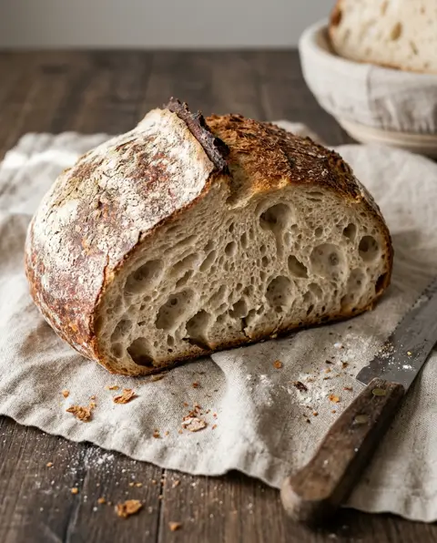
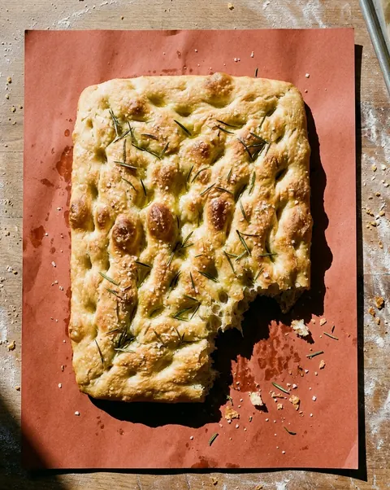

Il banco
Prodotti e prezzi
Quello che trovi ogni giorno. I prodotti di stagione cambiano con il calendario: chiedi al banco cosa è appena uscito dal forno.

Pane
- Pagnotta di campagna€ 6,80/kgTipo 1 e integrale, crosta scura, si conserva tre giorni.
- Filone ai grani antichi€ 7,90/kgSenatore Cappelli e Gentil Rosso, profumo di nocciola.
- Segale e noci€ 8,50/kgDenso e aromatico, perfetto con formaggi stagionati.
- Baguette€ 1,90Sfornata due volte al giorno, alle 6:30 e alle 16:30.

Focacce e pizze
- Focaccia all'olio€ 2,50Il trancio classico, con olio extravergine e sale grosso.
- Focaccia con cipolle€ 2,80Cipolla rossa stufata piano, finché diventa dolce.
- Pizza rossa in teglia€ 2,30Pomodoro, origano e un filo d'olio. Esce alle 11 e alle 17.
- Teglia intera su ordinazione€ 22,00Otto tranci, da prenotare il giorno prima.

Colazione e dolci
- Cornetto sfogliato€ 1,60Burro francese, sfogliatura a mano, tre giorni di lavorazione.
- Maritozzo con la panna€ 3,20Panna montata al momento, solo fino a esaurimento.
- Ciambellone della casa€ 14,00Al limone, intero. Le fette al banco a € 2,50.
- Biscotti al burro€ 24,00/kgFrolla classica e al cacao, venduti a peso.
Su ordinazione
Ti teniamo da parte il pane.
Ordina entro le 18 e lo trovi pronto la mattina dopo, con il tuo nome sul sacchetto.